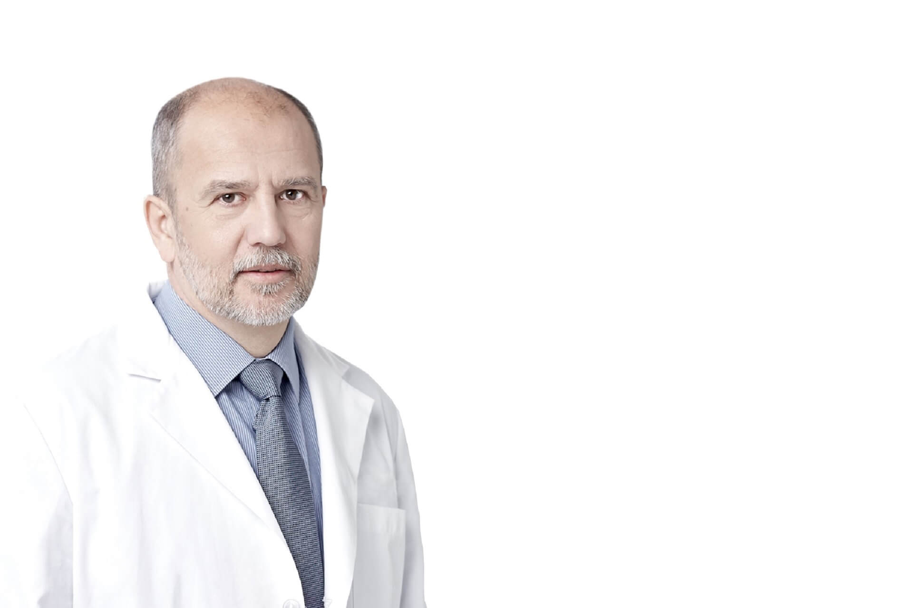

分子生物学博士（匈牙利科学院，1988）
HYD 创始人 / 科学总监 / CEO
匈牙利生物学家，1990 年起在匈牙利国立肿瘤研究所系统研究天然氘的生物学作用，1993 年创立 HYD，是氘耗减（Deuterium Depletion）研究领域的开创者之一。截至 2026 年，累计出版学术论文、著作与专利 113 项。
他在 20 世纪 90 年代初率先开始研究氘（D）的生理重要性以及撤除氘的生物学效应（尤其是抗癌效应），延续了诺贝尔奖得主 Albert Szent-Györgyi 的亚分子生物学遗产。
提出氘在生物体内可能具有重要生理作用的原始假设。
在 FEBS Letters 发表奠基性论文，首次系统揭示天然存在的氘对细胞正常生长速度至关重要。
累计出版学术论文、著作与专利 113 项（截至 2026 年）。
自 1990 年首瓶人工低氘水以来，持续 36 年的系统研究历程。
创始人 & CEO & 科学总监（1993 年创立）。
科学委员会主席。
113 项出版物、36 年研究脉络，多国语言出版，全球学术演讲。
1976 年，高博·索姆利艾博士 (Gábor Somlyai) 在匈牙利塞格德大学旁听诺贝尔奖得主 Albert Szent-Györgyi（圣捷尔吉）的讲座。圣捷尔吉提出"人类不能从分子层面去解决癌症问题"。索姆利艾由此提出反向思考：不是带负电的电子，而是氢离子（及其同位素氘）导致了癌症的形成--氢/氘比值可能是调节细胞增殖的关键信号。这一假设成为低氘生物学研究的源头，2026 年恰为灵感诞生 50 周年。
| 类型 | 说明 |
|---|---|
| 学术论文 | 1993 年至今发表的同行评议论文，覆盖肿瘤生物学、代谢、运动医学等方向 |
| 学术著作 | 2 部核心专著，另有 4 种语言版本（英/日/中/韩） |
| 专利 | 低氘水相关技术专利 |
第一部《Defeating Cancer》（英文 2000）已出版英文、日文、中文（人民卫生出版社 2010）、韩文版本。第二部《Deuterium Depletion》（英文 2021）已出版中文版（上海交通大学出版社 2023）。两书覆盖英/日/中/韩 4 种语言。
高博·索姆利艾博士 (Gábor Somlyai) 自 2010 年首届 ICDD 起担任科学委员会主席。第 5 届（2026）学术委员会成员机构包括：卡罗琳斯卡学院、牛津大学、UCLA、上海交通大学、匈牙利国家肿瘤研究院。